Inferencia sobre test
Izquierda: imagen original. Derecha: predicción con confianza.
Verde = acierto, rojo = falso positivo, amarillo = placa no detectada.
Correcta: todas las placas detectadas, sin falsos positivos (18)
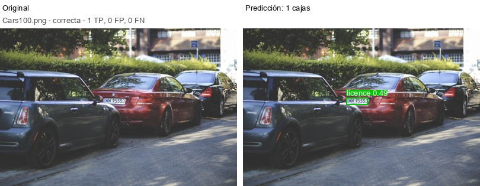
Cars100.png · 1 TP, 0 FP, 0 no detectadas
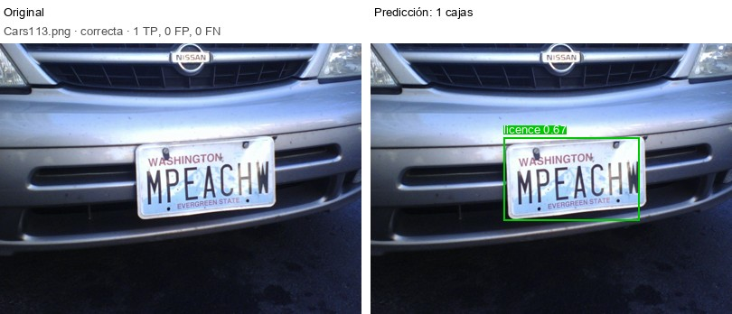
Cars113.png · 1 TP, 0 FP, 0 no detectadas
Cars117.png · 1 TP, 0 FP, 0 no detectadas
Cars118.png · 1 TP, 0 FP, 0 no detectadas
Cars15.png · 1 TP, 0 FP, 0 no detectadas
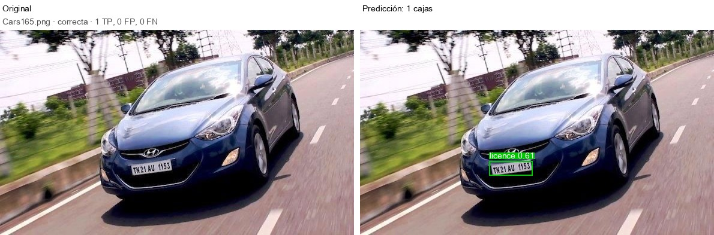
Cars165.png · 1 TP, 0 FP, 0 no detectadas
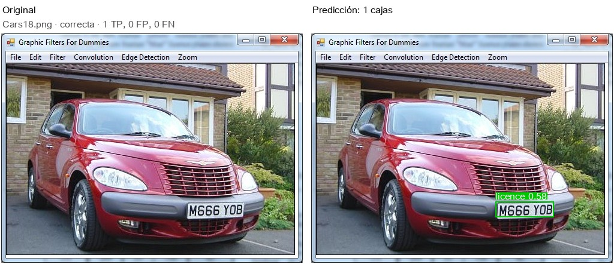
Cars18.png · 1 TP, 0 FP, 0 no detectadas
Cars192.png · 1 TP, 0 FP, 0 no detectadas
Cars226.png · 1 TP, 0 FP, 0 no detectadas
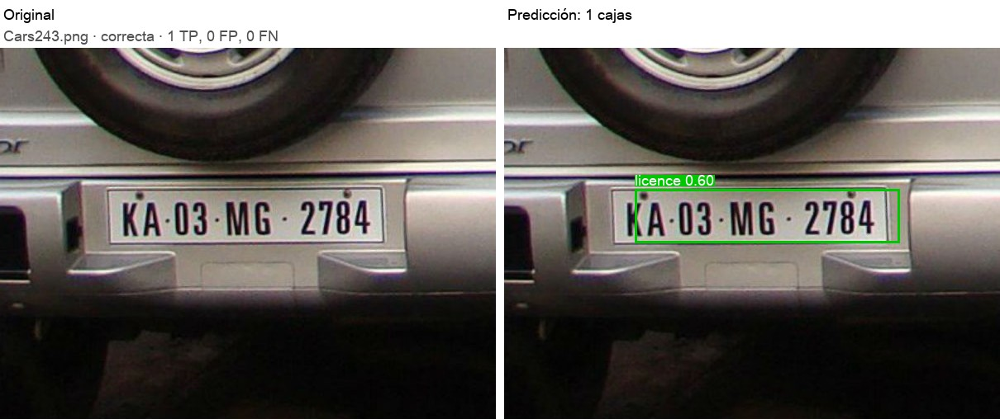
Cars243.png · 1 TP, 0 FP, 0 no detectadas
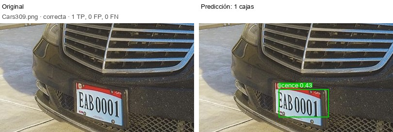
Cars309.png · 1 TP, 0 FP, 0 no detectadas
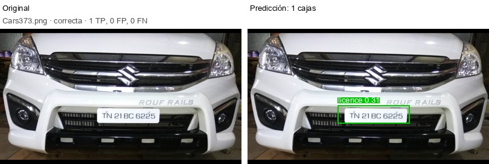
Cars373.png · 1 TP, 0 FP, 0 no detectadas
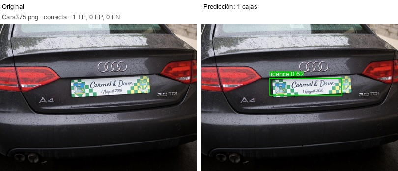
Cars375.png · 1 TP, 0 FP, 0 no detectadas
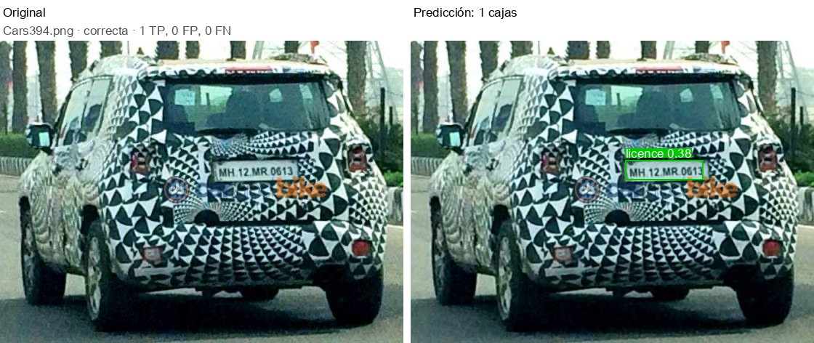
Cars394.png · 1 TP, 0 FP, 0 no detectadas
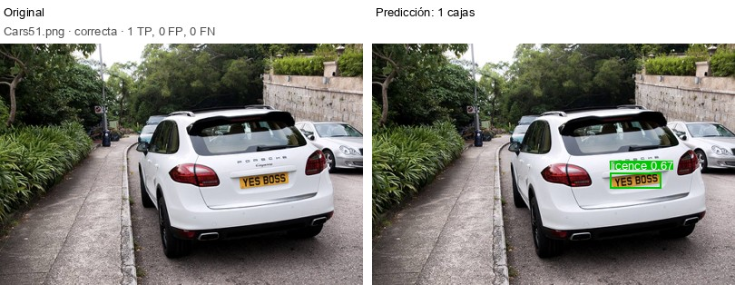
Cars51.png · 1 TP, 0 FP, 0 no detectadas
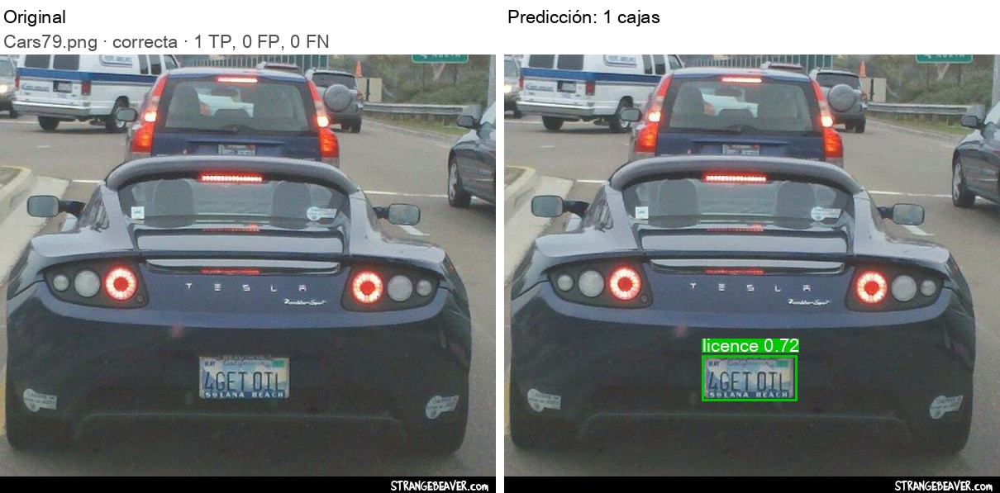
Cars79.png · 1 TP, 0 FP, 0 no detectadas
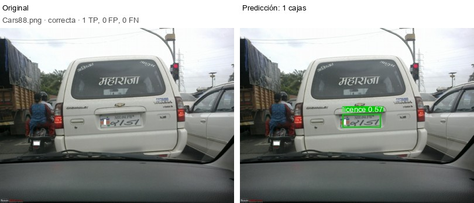
Cars88.png · 1 TP, 0 FP, 0 no detectadas
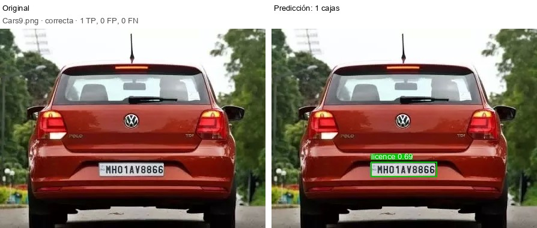
Cars9.png · 1 TP, 0 FP, 0 no detectadas
Con falsos positivos: detecta algo que no es una placa (8)
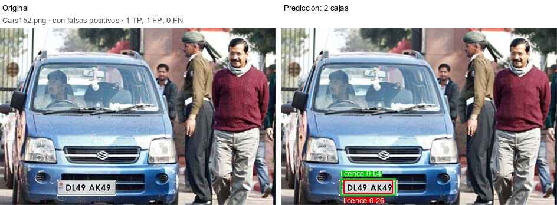
Cars152.png · 1 TP, 1 FP, 0 no detectadas
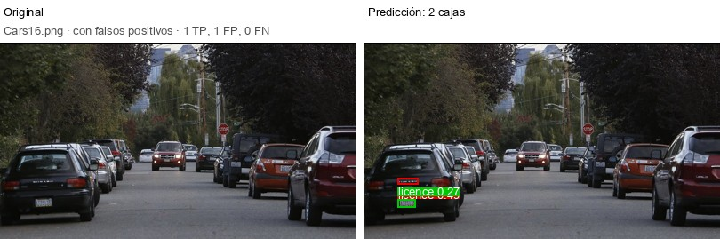
Cars16.png · 1 TP, 1 FP, 0 no detectadas
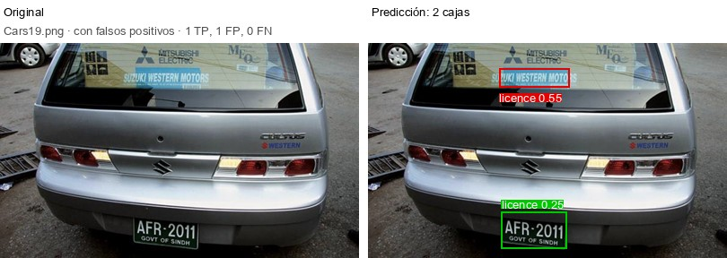
Cars19.png · 1 TP, 1 FP, 0 no detectadas
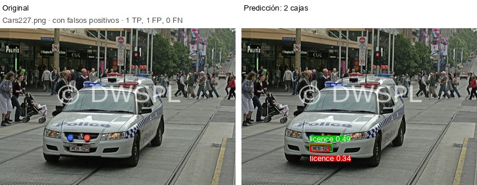
Cars227.png · 1 TP, 1 FP, 0 no detectadas
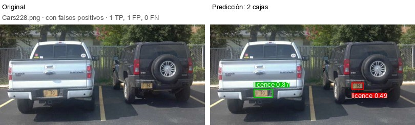
Cars228.png · 1 TP, 1 FP, 0 no detectadas
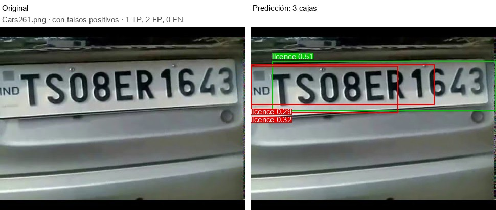
Cars261.png · 1 TP, 2 FP, 0 no detectadas
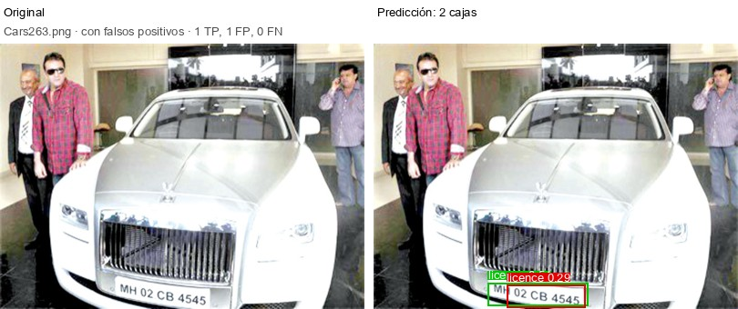
Cars263.png · 1 TP, 1 FP, 0 no detectadas
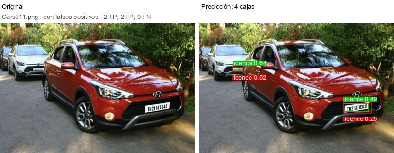
Cars311.png · 2 TP, 2 FP, 0 no detectadas
Con falsos positivos y placas no detectadas (2)
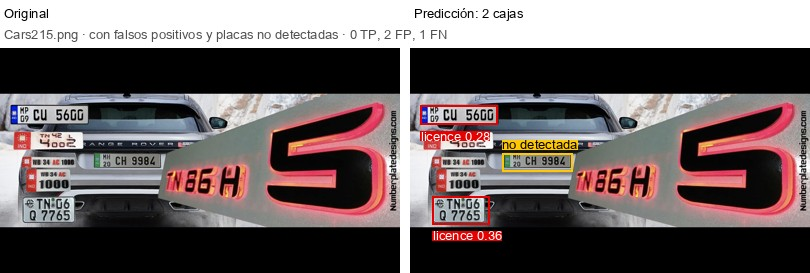
Cars215.png · 0 TP, 2 FP, 1 no detectadas
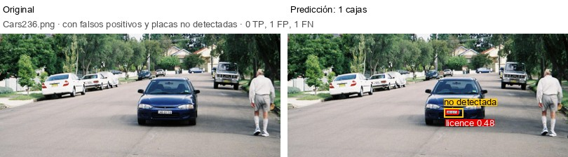
Cars236.png · 0 TP, 1 FP, 1 no detectadas
Sin detecciones (3)
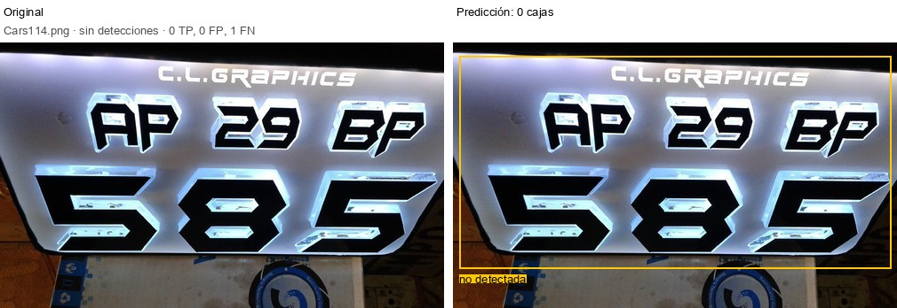
Cars114.png · 0 TP, 0 FP, 1 no detectadas
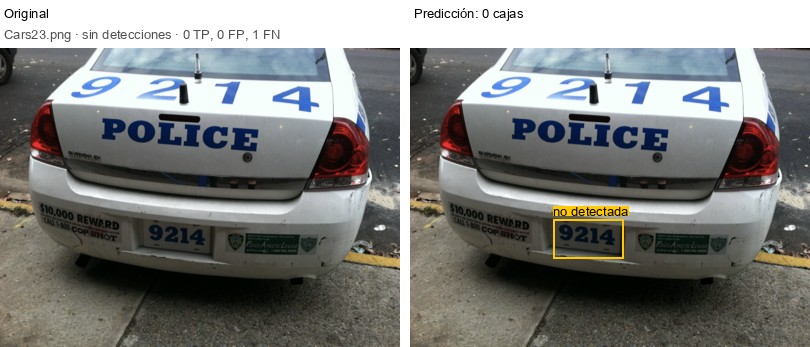
Cars23.png · 0 TP, 0 FP, 1 no detectadas
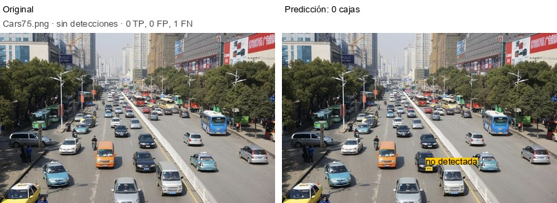
Cars75.png · 0 TP, 0 FP, 1 no detectadas